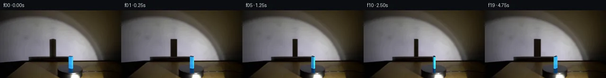

![首帧]()

Round 00
2026-11-05T03:07:18.776764+00:00像素候选变化代码 +236/−0inspection 更新
pixels cee2c6354519e3f8 · code 43650b15aee658b5
查看本轮 generate.py 真实 diff
--- previous/generate.py
+++ current/generate.py
@@ -0,0 +1,236 @@
+"""Generate the continuation with local pixel compositing and analytic cuboid geometry."""
+from pathlib import Path
+import math
+import numpy as np
+from PIL import Image, ImageDraw, ImageFilter
+from scipy.ndimage import gaussian_filter, map_coordinates
+from artifact_io import save
+
+ROOT = Path(__file__).resolve().parent
+SOURCE = np.asarray(Image.open(ROOT / 'first_frame.png').convert('RGB'))
+H, W = SOURCE.shape[:2]
+S = 6
+CY, CX = 123.1, 149.4
+DEPTH_SCALE = .35
+BW, BD, BH = 7.8, 4.0, 25.1
+THETA0 = math.radians(-17)
+LIGHT = np.array([76.4, -180.0, 14.4])
+WALL_Y = 90.0
+Y, X = np.mgrid[:H, :W].astype(float)
+HY, HX = np.mgrid[:H*S, :W*S].astype(float)
+HX = (HX + .5) / S
+HY = (HY + .5) / S
+
+
+def polygon_mask(points, blur=0):
+ im = Image.new('L', (W*S, H*S))
+ ImageDraw.Draw(im).polygon([(float(x*S), float(y*S)) for x, y in points], fill=255)
+ a = np.asarray(im.resize((W,H), Image.Resampling.LANCZOS), dtype=float)/255
+ return np.clip(gaussian_filter(a, blur) if blur else a, 0, 1)
+
+
+def corners(theta):
+ # Negative angle is clockwise as viewed from above (+X right, +Y away).
+ local = np.array([[-BW/2,-BD/2], [BW/2,-BD/2], [BW/2,BD/2], [-BW/2,BD/2]])
+ c, s = math.cos(theta), math.sin(theta)
+ xy = local @ np.array([[c,s],[-s,c]])
+ return np.c_[np.tile(xy,(2,1)), np.r_[np.zeros(4),np.full(4,BH)]]
+
+
+def project(points, reflection=False):
+ points = points.copy()
+ if reflection:
+ points[:,2] *= -.44
+ return np.c_[CX+points[:,0], CY-DEPTH_SCALE*points[:,1]-points[:,2]]
+
+
+def wall_projection(points):
+ t = (WALL_Y-LIGHT[1])/(points[:,1]-LIGHT[1])
+ q = LIGHT[None,:]+t[:,None]*(points-LIGHT[None,:])
+ return project(q)
+
+
+def convex_hull(points):
+ points = sorted(set(map(tuple, points)))
+ def cross(o,a,b): return (a[0]-o[0])*(b[1]-o[1])-(a[1]-o[1])*(b[0]-o[0])
+ low=[]; high=[]
+ for p in points:
+ while len(low)>1 and cross(low[-2],low[-1],p)<=0: low.pop()
+ low.append(p)
+ for p in reversed(points):
+ while len(high)>1 and cross(high[-2],high[-1],p)<=0: high.pop()
+ high.append(p)
+ return np.array(low[:-1]+high[:-1])
+
+
+def clean_background():
+ out = SOURCE.astype(float).copy()
+ # Remove the moving column of wall shadow, retaining the platform shadow.
+ # Fit each horizontal scanline to its unoccluded neighbors; the illumination
+ # residual just above the shadow supplies the low-frequency wall texture.
+ xx = np.arange(102,123)
+ u = (xx-102)/20
+ ref = np.mean(SOURCE[55:59].astype(float), axis=0)
+ profile = ref[xx] - ((1-u[:,None])*ref[102]+u[:,None]*ref[122])
+ for y in range(59,103):
+ left = np.mean(SOURCE[y,99:103],axis=0)
+ right = np.mean(SOURCE[y,122:126],axis=0)
+ row = (1-u[:,None])*left + u[:,None]*right
+ # Once the fixed platform's shadow begins, it dominates the color.
+ strength = 1 if y < 98 else max(0,1-(y-97)/4)
+ out[y,xx] = row + profile*strength
+ # Remove only the block and its blue reflection. Across the upper band,
+ # preserve the hidden termination of the platform's fixed wall shadow.
+ for y in range(95,136):
+ left = np.median(SOURCE[y,138:143],axis=0).astype(float)
+ right = np.median(SOURCE[y,157:162],axis=0).astype(float)
+ for x in range(143,157):
… diff truncated; 149 more lines …